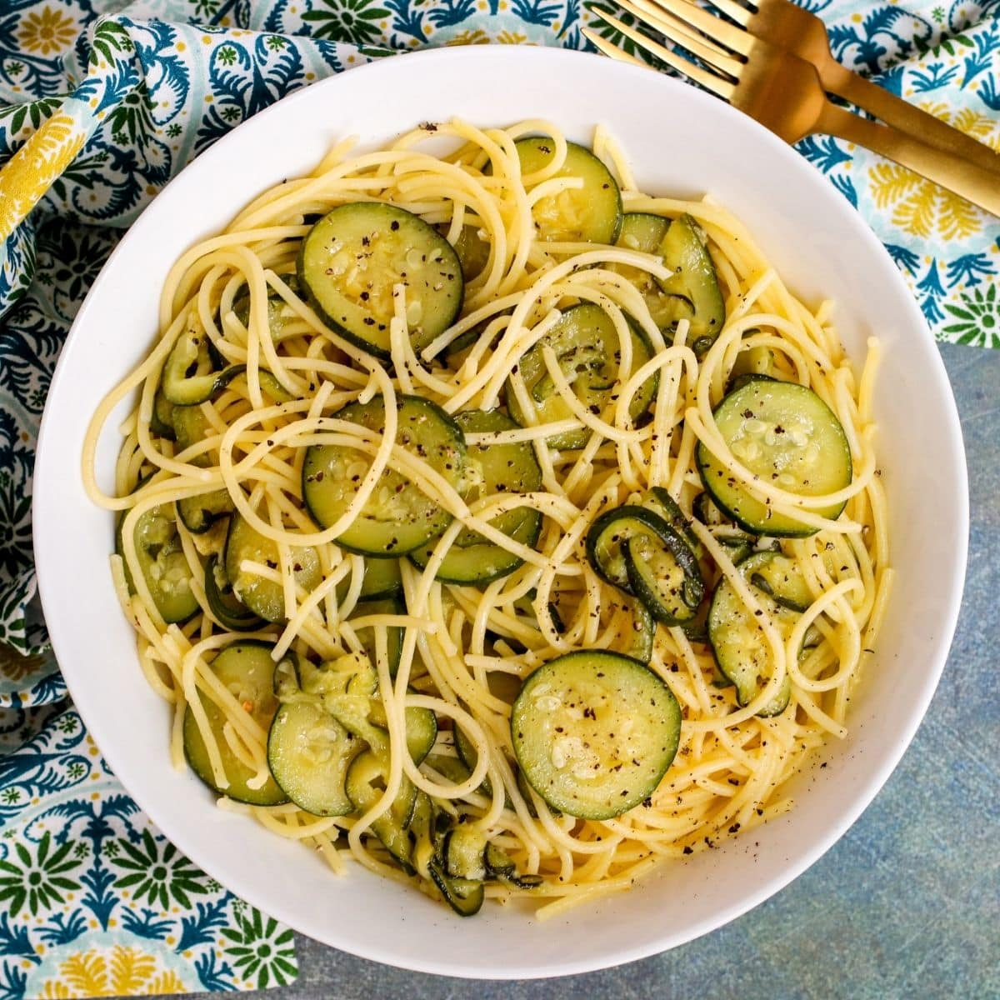

Pasta

Description
Lets create a simple light vegan lunch to help you reach your vegetable goals!
Ingredients
- Pasta (1/2 Cup)
- Vegetable of Choice (1 cup)
- Olive Oil (1 tbsp)
Steps
- Step 1: Pour three cups of water to a small pot and bring to a slight boil before adding in your pasta.
Allow
this to cook for 8-12 minutes or until desired consistency.
- Step 2: While the pasta boils, carefully chop your vegetable of choice into your desired size. Pour a
tablespoon of olive oil into a small sauce pan and begin to fry your vegetable. Add seasonings like
garlic, black pepper, and salt for extra flavor!
- Step 3: Once all ingredients are done cooking, add them into a bowl, mix, and enjoy.